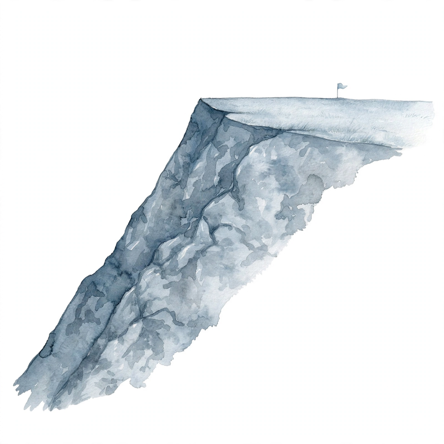
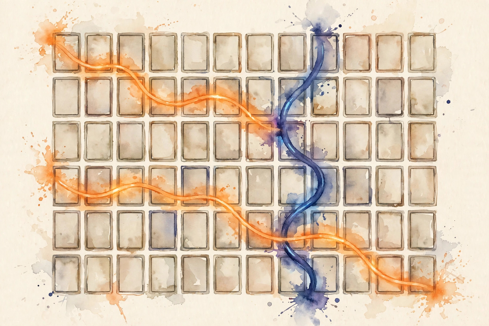

Companion · narrated from the lesson document
Before a model can learn, its program must run correctly and fit on the device. This companion walks Unit 02 end to end: shapes as contracts, index notation, memory layout, the bytes a run holds, the FLOPs a run costs, and the roofline that says which bound you hit.
From the lesson The idea, and every number beside it, comes from the cited section of u02_tensor_programming.md. The phrasing is the companion's.
Illustration Invented by the companion: an analogy, a toy with made-up values, or a what-if. Never lecture content.
companion Companion voice: the idea above the tag is from the lesson. The generalization below it is the companion's.
Provenance: no full lecture transcript exists for this session. The page narrates the lesson document content/v2/cs336/lessons/u02_tensor_programming.md, not a video. Claim class: REQUESTED-BRANCH. Every number carries the lesson section that reports it, with the lab script and its execution date.
Watch the lecture
Official lecture video: Stanford CS336 Language Modeling from Scratch | Spring 2025 | Lec. 2: Pytorch, Resource Accounting (YouTube).

From the lessonRemediation
A tensor has three facts: a shape (the size of each axis), a stride (the storage step per axis), and a dtype (the bytes per element). Element count is the product of the shape entries. Everything in this unit, FLOPs, bytes moved, memory totals, starts from these three facts.
From the lessonC01 §2, §5
Why do shape bugs eat hours of debugging? Because the code says nothing about what it expects. Take x of shape (4, 256, 512) and W of shape (512, 2048). The product x @ W gives (4, 256, 2048). The reversed product W @ x is illegal: the contract of @ needs the inner axes to match. The mental model: every operation is a contract, input shapes in, output shape out.
Read shapes right to left for matmuls. The last two axes do the work. Leading axes batch. The matmul contract reads: (..., M, K) @ (..., K, N) gives (..., M, N), with leading axes broadcast. Embedding: ids (B, T) plus table (V, d) gives (B, T, d). Softmax over the last axis and layer norm over the last axis leave the shape unchanged.
From the lessonC01 §6 Contract check. Batched einsum "bij,bjk-->bik" on (2, 3, 4) and (2, 4, 5) gives (2, 3, 5). The lesson computed this in visuals/compute_u02.py (executed 2026-10-06): the contract prediction matched exactly.
| Input A | Input B | Predicted | Computed |
|---|---|---|---|
| (2, 3, 4) | (2, 4, 5) | (2, 3, 5) | (2, 3, 5) |
From the lessonC01 §7, §8, §9
The lesson ships a check_shapes helper: about ten lines, taking a tensor and an expected shape tuple with None as wildcard, and raising a message that names the operation, the expected contract, and the actual shape. Contract tests cover matmul, embedding, softmax, and norm on the toy shapes above. A deliberately wrong contract raises with the operation name in the message. Shape checks cost microseconds. A missed shape bug costs a silent wrong result or a crash deep in a training run.
From the lessonC02 §2, §3
How do you write attention without a forest of transposes? One line: scores = einsum("bhid,bhjd-->bhij", Q, K). Batch b, head h, query i, key j. No transpose calls. The mental model: an einsum string names each axis with a letter. Repeated letters across inputs multiply and sum. A letter in only one input passes through. The output lists the letters to keep, in order. The string IS the shape contract.
From the lessonC02 §5, §6
The four patterns the lesson uses everywhere: "ik,kj-->ij" is matrix multiplication, the sum over k of A[i,k]B[k,j]. "bij,bjk-->bik" is batched matmul. "bhid,bhjd-->bhij" is attention scores per head. "bhij,bhjd-->bhid" is scores times values. The lesson verified in visuals/compute_u02.py (executed 2026-10-06) that einsum("ik,kj-->ij") matches A @ B to allclose on random (3, 4) by (4, 5) inputs.
From the lessonC02 §9, §10
Costs are honest here: einsum can run slower than a hand-fused @ on some backends, because the optimizer may pick a naive path. For teaching and for non-hot paths the clarity wins. Time the hot path before committing. Selection boundary: use plain operators with written contracts for hot paths, einops rearrange and reduce where readability matters, and einsum for any expression with three or more tensors or tricky axes.
From the lessonC03 §2, §5
Why does .T cost nothing but sometimes make the next op twice as slow? The toy from compute_u02.py answers. A (4, 6) float32 array has strides (24, 4) and is C-contiguous. Its transpose has shape (6, 4), strides (4, 24), shares memory, and is not C-contiguous. The transpose only rewrote metadata. Stride says how many bytes to step per axis. A view reuses storage with new metadata. Contiguous means the metadata matches the natural walk order, which is what fast kernels expect.

From the lessonC03 §6
The lab table, executed 2026-10-06:
| Object | Shape | Strides (bytes) | C-contiguous | Shares memory |
|---|---|---|---|---|
| C array | (4, 6) | (24, 4) | True | - |
| Transpose | (6, 4) | (4, 24) | False | True |
| Explicit copy | (6, 4) | (24, 4) | True | False |
From the lessonC03 §11
The failure case runs the other way too. An in-place ReLU on a view that aliases an activation needed for backward corrupts the saved tensor, and the gradients come out wrong. The version-counter error is the symptom. The assumption "in-place is safe" breaks under autograd.
From the lessonC04 §2, §3
The parameters fit, so why does training run out of memory? Backward needs the inputs of every differentiable op. Each layer saves its attention inputs, scores or softmax output, and FFN intermediates. The toy: a 41.55M-parameter model holds about 134 MB of fp16 activations at B=4, T=256, while Adam state holds 665 MB. At larger B and T, activations dominate.
From the lessonC04 §5, §6
Per layer, the dominant saved tensors: attention input (B, T, d), QKV projections (3 x B, T, d), attention weights (B, h, T, T), FFN up (B, T, dff) and gate (B, T, dff). Sum the elements, multiply by L and by 2 bytes. The T-squared term is what explodes at long context. Computed in visuals/compute_u02.py (executed 2026-10-06): B=4, T=256, d=512, L=8, dff=2048, h=8 gives about 134.2 MB of fp16 activations under the stated estimate formula. The formula is documented in the script. It is an estimate, not a framework measurement.
From the lessonC04 §10
Two exits exist: activation checkpointing (C10) trades compute for memory, and smaller microbatches (U08) trade throughput for memory. Estimate first, then choose.
From the lessonC05 §2, §3
How much memory does a 41M-parameter model really need to train? Count bytes per parameter, then multiply. SGD: 4 (param) + 4 (grad) + 4 (momentum) = 12. Adam: plus 4 (v) = 16. Mixed precision Adam: 2 (bf16 param) + 2 (bf16 grad) + 4 (fp32 master) + 4 (m) + 4 (v) = 16.
From the lessonC05 §5, §6
Each term is params times dtype bytes. The master copy exists because bf16 updates would round to zero at small learning rates. Computed in visuals/compute_u02.py (executed 2026-10-06): 41.55M params give Adam fp32 total 664.8 MB, mixed precision total 664.8 MB. Same total, different split: mixed keeps activations in bf16 (C04) and computes in bf16 (C11). The savings are in activations and compute, not in optimizer state.
From the lessonC05 §3 Bytes-per-parameter ladder. Move the slider to scale the model.
Parameters: 41.55M
| Optimizer | Bytes / param | Total |
|---|
Totals: SGD with momentum 12 bytes, Adam fp32 16 bytes, mixed precision Adam 16 bytes. From C05 §3, computed live.
From the lessonC05 §9, §10
Optimizer state is the largest fixed cost of training, and it does not shrink with batch size. It is the first thing sharded (U08). The alternative: SGD with momentum at 12 bytes, or 8-bit optimizers with quantization risk. Adam stays the default for transformers. Switch only with evidence the task tolerates it.
From the lessonC06 §2, §5
Where does the compute go in one layer? One multiply-add is 2 FLOPs. A matrix product (M, K) by (K, N) costs 2MNK FLOPs: MNK multiplications and MNK additions. Every linear map (B, T, d_in) to (B, T, d_out) costs 2*B*T*d_in*d_out. Attention scores cost 2*B*h*T*T*d_h, and the mix costs the same again.
From the lessonC06 §6
The lesson's per-layer split, toy config B=4, T=256, d=512, dff=2048, h=8, computed 2026-10-06: one forward layer costs 8.858 GFLOP. Eight layers: 70.9 GFLOP forward per batch, backward about 141.7 GFLOP.
visuals/compute_u02.py, executed 2026-10-06.From the lessonC07 §2, §5, §6
Why is a training step about 3x a forward pass? Backward through a linear map computes two matmuls: gradient wrt input (dout times W-transpose) and gradient wrt weight (x-transpose times dout). Each costs about the same as the forward matmul. Across the network the ratio settles near 2x forward, because not every forward op has two backward matmuls. The toy: the layer from C06 costs 8.858 GFLOP forward, backward costs about 17.7 GFLOP, total about 26.6 GFLOP, or 3x forward.
Derivation detail: y = xW costs 2MNK forward. dx = dout W^T costs 2MNK. dW = x^T dout costs 2MNK. Per op that is 6MNK, or 3x forward for that op. Norms and activations are cheaper on the backward side, which pulls the network ratio to about 2x forward, 3x total.
From the lessonC06 §11, C07 §10
Two traps to close. First: counting only the FFN and forgetting attention. At T=8192 the scores term (T-squared) dominates and the estimate is off by an order of magnitude. The assumption "FFN always dominates" breaks at long context. Second: counting MACs instead of FLOPs gives half the number with the same information. Use FLOPs to match vendor peak figures. The 3x rule converts forward estimates into training budgets (U10). Use the rule early, the profiler late.
From the lessonRemediation, C08 §2, §5
Arithmetic intensity is FLOPs divided by bytes moved. For a matmul: 2MNK FLOPs over about 2(MK + KN + MN) bytes in fp16. A roofline plot compares intensity against the machine balance (peak FLOP/s divided by bandwidth). Below the balance the operation is memory-bound. Above it, compute-bound.
From the lessonC08 §6
Three shapes, one lesson, computed 2026-10-06. A (512, 512, 512) matmul has intensity 170.7 FLOP/byte: compute-bound on the toy device. A (1, 512, 512) vector-matrix product has 1.0 FLOP/byte: hopelessly memory-bound. Same op family, opposite bottlenecks. Batch size and sequence length move intensity more than model size does.
visuals/compute_u02.py (executed 2026-10-06). The (1, 512, 512) case is the decode regime of U11.Illustration Roofline toy. Set a shape and a device. The toy computes intensity from the lesson's formula and places the op on the roofline.
Shape (M, K, N)
Device
Peak TFLOP/s · Bandwidth TB/s
Press the button.
Formulas: FLOPs = 2MNK, bytes = 2(MK + KN + MN), intensity = FLOPs / bytes, cap = min(peak, intensity * bandwidth). From the remediation block and C09 §5.
From the lessonC09 §3, §5, §11
The five loss sources the lesson names: memory bound (roofline), kernel launch overhead, low occupancy, extra traffic from unfused ops, and communication. Achieved equals peak times efficiency, and the efficiency factors multiply (occupancy 0.9, fusion 0.8, overlap 0.95 in the lesson's sketch). Two warnings close the section. First: quoting kernel FLOP/s with recomputation counted twice as model FLOP/s makes MFU look great while the job is slow. Always state which count the rate uses. Second: counting only HBM traffic while the kernel is SRAM-bound gives a fine-looking intensity for a stalled kernel. Restate the boundary per kernel, especially for fused kernels (U07).
From the lessonC11 §2, §5
Dtype sets three things: bytes per element (memory and traffic), representable range (overflow risk), and precision (rounding error). fp16 tops out at 65504 with 10 mantissa bits. bf16 keeps the fp32 exponent range with 7 mantissa bits. Gradients with large dynamic range overflow fp16 but fit bf16. The price is coarser precision.
From the lessonC11 §5, §6
Memory halves going 4 to 2 bytes. Traffic halves, so memory-bound ops speed up up to 2x. On the toy model, activations go from 268.4 MB in fp32 to 134.2 MB in fp16 or bf16 (halved, from the C04 formula). Loss scaling was the historical fix for fp16 overflow. bf16 removes the need for it. The fp32 master copy (C05) absorbs the rounding: bf16 rounds updates below about 2^-8 relative, and the master keeps them alive.
From the lessonC11 §10
The standard answer: mixed precision, not pure low precision. Train in mixed bf16/fp32, debug in fp32, consider fp8 for inference where training support varies. Halved memory and traffic, with new failure modes (overflow, update underflow) as the price.
From the lessonC10 §2, §3
Will this config fit on the device? The ledger is a table, not a feeling. Rows: one per memory class. Each row states the formula, the inputs, and the bytes. The sum plus a fragmentation margin is the verdict. The toy ledger for the 41.55M model (B=4, T=256, fp16): params plus grads plus Adam state 664.8 MB, activations about 134.2 MB, total about 799 MB plus workspace. One page, five lines, go or no-go.
From the lessonC10 §5, §11
Total equals optimizer bytes (C05) plus activation bytes (C04) plus workspace (temporary buffers, small) plus the input batch. Compare against device memory. If it exceeds, the ledger says which row to attack: shard the optimizer, checkpoint the activations, shrink the batch. The ledger costs minutes and prevents OOMs that cost hours. It is the cheapest performance tool in the course. One warning: the ledger omits data loader workers and NCCL buffers. On 8 GPUs the missing rows exceed the margin and the job OOMs at scale-up. The assumption "five rows suffice" breaks multi-GPU. U08 and U09 add the missing rows.
From the lessonC12 §2, §5, §6
The unit closes with an honest workflow for a box with no GPU. Every number in U02 was computed on CPU with numpy. Shapes, strides, FLOP counts, and memory estimates are exact on CPU. Only wall-time claims need hardware. The workflow: implement in numpy, verify against analytical cases and finite differences, port the verified logic to torch, measure only on the target device. Separate correctness (shapes, values, invariants) from performance (rates, occupancy, overlap). CPU proves the first completely and informs the second through arithmetic, never through timing. And the discipline cuts both ways: a kernel optimized against CPU timings inverts its ranking on GPU, because the bottleneck differs (cache versus HBM). The lesson's own roofline explains why.
From the lessonC01 §3, C05 §3, C06 §5, C10 §3
The arc, end to end. A tensor is shape, stride, and dtype, and every operation on it is a shape contract (C01). einsum writes the contract in one line and names every axis (C02). Storage is flat. Strides and views decide what layout the kernel actually walks (C03). Training memory has two big rows: activations that scale with B, T, L, and d (C04), and optimizer state at 16 bytes per parameter for Adam (C05). Compute counts start at 2MNK per matmul and settle into the 3x rule for a full training step (C06, C07). Arithmetic intensity places each op on the roofline, memory-bound or compute-bound (C08). The roofline, not the raw peak, is the fair judge of MFU (C09). The ledger adds the rows, adds the margin, and gives the verdict (C10). bf16 keeps fp32 range at half the bytes, with the master copy absorbing the rounding (C11). CPU proves correctness. Only the device proves speed (C12).
From the lesson Where the unit points next, in the lesson's own forward links: U07 restates the memory boundary per kernel, because fused kernels stall on SRAM while the HBM arithmetic looks fine. U08 shards the optimizer state first, since it is the largest fixed cost. U09 adds the multi-GPU rows the ledger omits. U10 turns the FLOP counts into compute budgets. U05 trades batch size against the activation row.
Every lesson on this page, in order. Tap one to return to its chapter.